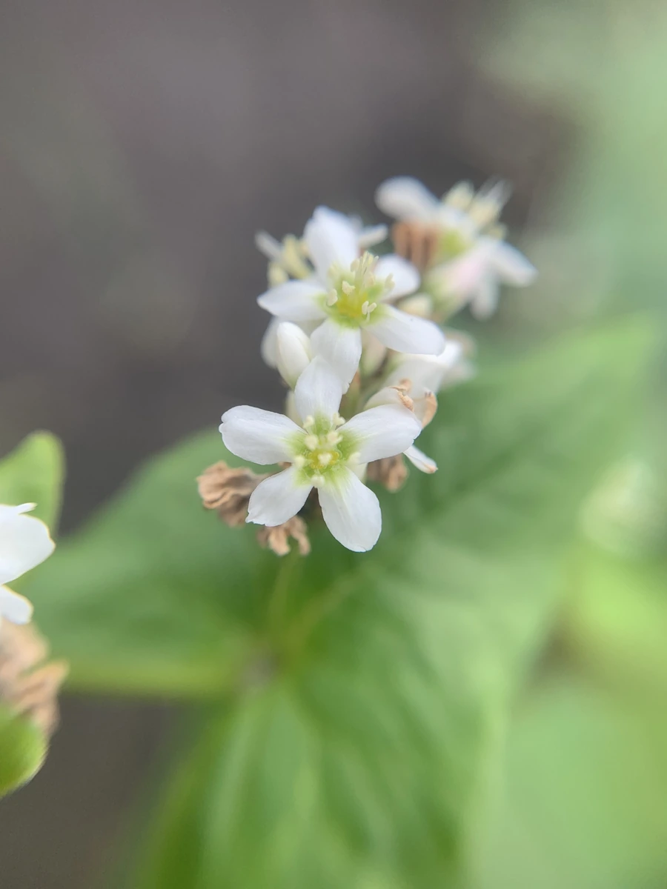

农作物与经济植物 · 植物界
苦荞 Fagopyrum tataricum

蓼科荞麦属一年生草本，籽粒富含芦丁，耐寒耐瘠，是中国西南高海拔山区重要的传统杂粮与药用作物。
- 分类
- 门被子植物门纲木兰纲目石竹目科蓼科属荞麦属
- 栖息环境
- 海拔 1000–3000 米的山坡、河谷与冷凉山区，耐寒耐瘠薄
- 地理分布
- 中国云南、四川、贵州、西藏等高海拔山区；印度、尼泊尔也有栽培
- 保护级别
- IUCN 暂无评估；栽培广泛，地方品种资源需保护
物种志
苦荞为一年生草本，高 30–100 厘米，茎直立、光滑，常带红色。叶片三角形或戟形，长 3–8 厘米，基部心形，叶柄细长。花序总状，花小、白色或淡粉色，花期 6–8 月；瘦果三棱形，成熟时黑褐色，表面粗糙，果期 9–10 月。
苦荞原产中国西南部，主要分布于云南、四川、贵州、西藏等高海拔山区，生于海拔 1000–3000 米的山坡与河谷，耐寒、耐瘠薄、生长期短。它的籽粒富含芦丁（维生素 P），可制成苦荞茶、苦荞面与苦荞米，是糖尿病与高血压人群喜爱的杂粮；茎叶可作饲料，荞壳可作枕芯。苦荞不是禾本科的“麦”，而是蓼科植物，与甜荞是近亲。
形态与习性
- 株高30–100 厘米，茎常带红色
- 花期6–8 月，花小、白色至淡粉色
- 果期9–10 月，瘦果三棱形、黑褐色
- 光照喜光，生长期需充足日照
- 水分耐旱，忌积水
- 土壤不择土壤，以疏松的沙质壤土为佳
- 主要用途杂粮（苦荞茶、苦荞面）、药用与饲料
趣味知识
- 苦荞富含芦丁，含量远高于甜荞，因此被开发成苦荞茶与保健食品。
- 它虽然叫“荞麦”，却不是禾本科的麦类，而是蓼科植物。
- 苦荞耐寒耐瘠、生长期短，是云贵高原与青藏高原边缘的重要救荒作物。
- 苦荞的茎叶柔嫩多汁，也可作牲畜饲料。